- The voltage across the 1 kΩ resistor between the nodes A and B of the network shown in the given figure is
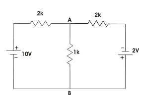 - In the network shown, what is the electric current I in the direction shown
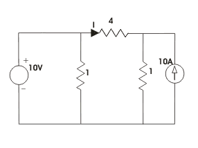 - An electrical circuit with 10 branches and 7 nodes will have
Number of loop equations loops = branches - nodes + 1 = b - n + 1 = 10 - 7 + 1 = 4 loop equations.
- In given figure, the value of resistance R in Ω is
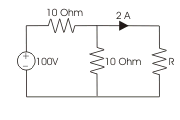The given circuit can be simplified by replacing voltage source by equivalent current source as below,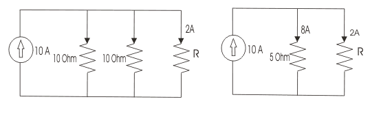
The electric current through 5 Ω resistor is 8 A hence voltage across it is 8 × 5 = 40 V and this is the voltage across unknown resistor R. As electric current through R is 2 A and then R = 40/2 = 20 Ω.
- In given figure, the value of resistance R in Ω is
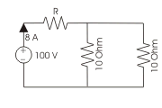The given circuit can be simplified by replacing voltage source by equivalent current source as below,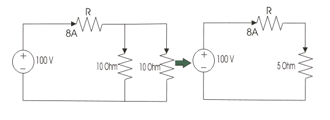
8 × (R + 5) = 100 V ⇒ R = 7.5 Ω.
- A 35 V source is connected to a series circuit of 600 Ω and R as shown. If a voltmeter of internal resistance 1.2 kΩ is connected across 600 Ω resistor, it reads 5 V. The value of R is
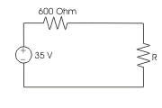As the voltmeter of internal resistance 1.2 KΩ is connected across the 600 Ω resistor and it gives 5 V reading, the circuit electric current I = 5/600 +5/1200 A = 0.0125 A. As supply voltage is 35 V, the voltage across resistor R is 35 - 5 = 30 V. - A certain network consists of large number of ideal linear resistances, one of which is designated as R and two constant ideal source. The power consumed by R is P1 when only the first source is active and P2 when only second source is active. In both sources are active simultaneously then the power consumed by R is
- In the circuit given, I = 1 A for Is = 0. What is the value of I for Is = 2 A ?
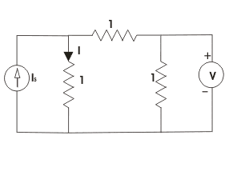 - In the circuit shown below, what is the voltage across 5Ω resistor ?
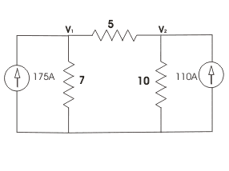 - For the circuit shown in the given figure the electric current I is given by
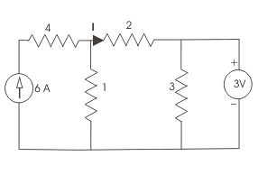 - For the circuit given in the figure the power delivered by the 2 V source is given by
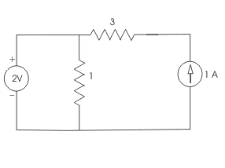. - In the circuit shown in the figure, the value of Vs is 0, when I = 4A. The value of I, when Vs = 16 V, is
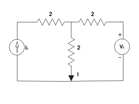. - Consider the following circuit: In this circuit, when Vs = 3 V, I = 4 A, what is the value of I when Vs = 12 V ?

- In the figure given, the value of R is

- In the given figure the value of the source voltage is
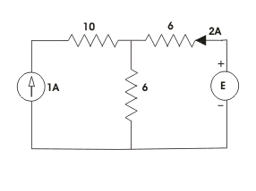 - Three resistance of two ohms each are connected in star in the equivalent delta representation each resistance will have a value of ________ohms.
RA = RB = RC = 2 × 2 + 2 × 2 + 2 × 2 / 2 = 6 ohms .
- Consider the following circuit: What is the value of electric current I in the 5 Ω resistor in the circuit given in the figure ?
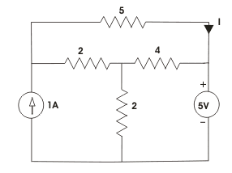 - The value of V in the circuit shown in the given figure is
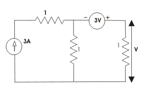 - In the given figure, the Thevenin equivalent voltage and impedance as seen from the terminals P-Q is given by
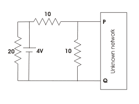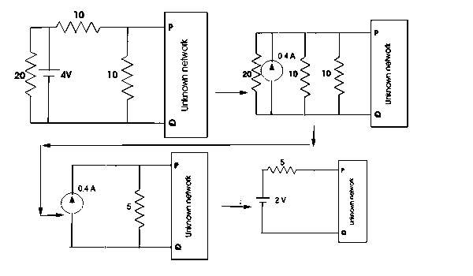
2 V, 5 Ohm. - For the network shown below when I = 0, V = 20 V and when R = 0, I = 10 A. If now R = 3 Ω what is the value of the electric current I?
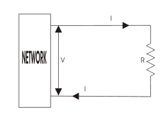
Design with  by SARU TECH
by SARU TECH
www.sarutech.com
Content Credited to electrical4u.com
Online Electrical Engineering Study Site